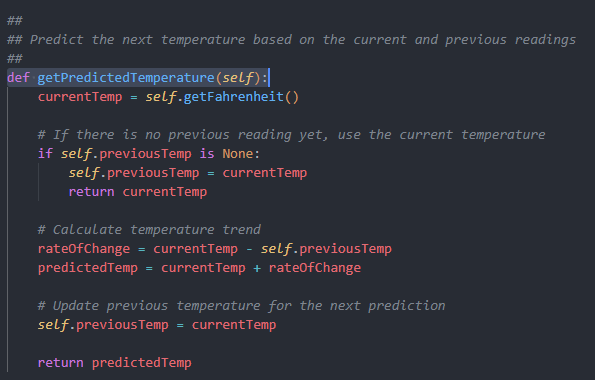
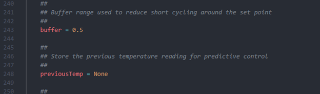
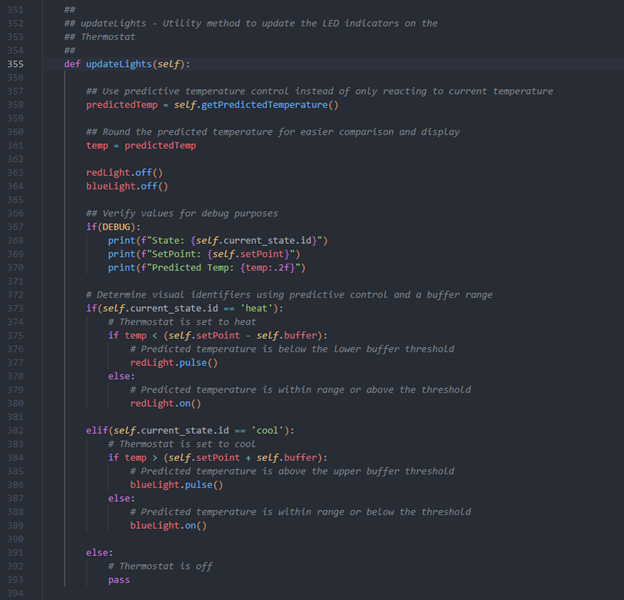

Artifact 2: Algorithms and Data Structures
Smart Thermostat Control System
This artifact is my Smart Thermostat Control System, originally developed in CS 350: Emerging Systems Architectures and Technologies. I selected this artifact because it demonstrates my ability to work with algorithmic logic, state-based behavior, and control systems using Python and Raspberry Pi components.
For my enhancement, I focused on improving the thermostat’s decision-making logic by implementing predictive temperature control and a buffer to reduce short cycling.
Artifact Overview
The original thermostat project was designed to simulate the behavior of a smart thermostat using Python and Raspberry Pi hardware. The system reads temperature data from a sensor, allows the user to adjust the set point with buttons, and uses a state machine to manage whether the thermostat is off, heating, or cooling. The thermostat also provides visual feedback through LEDs, an LCD display, and serial communication.
While the original code worked as a prototype, its control logic depended mainly on the current temperature reading. This meant the thermostat could react too quickly to small fluctuations near the set point. The enhanced version improves the algorithm by using previous temperature data to estimate a predicted temperature and by adding a small buffer range to improve stability.
Enhancement Highlights
- Added previous temperature tracking for predictive control
- Implemented a predictive temperature function using rate of change
- Added a buffer range around the set point to reduce short cycling
- Updated thermostat decision logic to use predicted temperature instead of only current temperature
Selected Code Screenshots
The screenshots below highlight the major algorithmic improvements made to this artifact.
Figure 1: Predictive Temperature Function

Figure 2: Buffer and State Variables

Figure 3: Updated Decision Logic

Narrative
Artifact Description
The artifact I selected for this enhancement is my Smart Thermostat control system, which I originally developed in CS 350: Emerging Systems Architectures and Technologies. This project was created as part of a thermostat lab in which I used Python and Raspberry Pi hardware components to simulate the behavior of a smart thermostat. The system reads temperature data from a sensor, allows the user to change the set point using buttons, and uses a state machine to manage whether the system is off, heating, or cooling. The thermostat also provides feedback through LEDs, an LCD display, and serial output. For this milestone, I focused on improving the thermostat’s control algorithm so that it behaves in a more intelligent and realistic way.
Justification and Enhancements
I selected this artifact for my ePortfolio because it demonstrates my ability to work with algorithmic logic, control systems, and embedded-style programming. Unlike a project that mainly focuses on interface design, this artifact highlights how data is processed and how logic decisions affect system behavior. It also provided a strong opportunity to improve an existing algorithm in a way that is easy to explain and directly connected to real-world system performance.
The original thermostat code relied mainly on the current temperature reading when deciding how the system should behave. That design worked for a prototype, but it could react too quickly to small temperature fluctuations near the set point. For this milestone, I improved the artifact by implementing predictive temperature control. I added a previous temperature variable so the system could calculate the temperature trend over time. I then used the current and previous values to estimate a predicted temperature instead of only reacting to the current reading. In addition, I added a buffer value around the set point to reduce short cycling. This means the thermostat now waits until the predicted temperature moves outside a small acceptable range before changing the heating or cooling behavior.
These improvements strengthen the algorithm by making the thermostat more stable and more realistic. The enhancement shows my ability to design and improve an algorithm, use state-based logic effectively, and think through the trade-offs involved in real system behavior.
To further illustrate these enhancements, selected portions of the updated code are included above, highlighting the implementation of predictive temperature control and the use of a buffer to improve system stability.
Course Outcomes and Updates
Through this enhancement, I made strong progress toward the course outcomes related to designing and evaluating computing solutions using algorithmic principles. The predictive control logic directly supports the outcome focused on solving problems using algorithmic principles and computer science practices because it changes the way the system processes data and makes decisions. I also demonstrated progress toward the outcome related to using appropriate tools and techniques in computing practices by improving the code structure without replacing the original state machine design.
This enhancement also connects to the security and reliability mindset outcome in a broader sense because the buffer reduces unnecessary cycling and helps protect the physical system from unstable behavior. In Module One, I planned to demonstrate algorithm design, system efficiency, and control logic improvements through this artifact, and I believe this enhancement still aligns well with that plan. At this point, I do not see a need to change my overall outcome-coverage plan for this artifact.
Reflection on the Process
Enhancing this artifact helped me better understand how even a small algorithm change can have a major impact on system behavior. One of the biggest things I learned was that reactive logic is not always enough for a system that interacts with real-world conditions. A thermostat that only responds to the current temperature can work, but it may not behave efficiently when conditions fluctuate around the set point. Adding predictive logic helped me think more carefully about how systems respond over time rather than only at a single moment.
Another thing I learned was the importance of balancing precision and stability. The goal was not simply to make the thermostat react faster, but to make it react more intelligently. Adding the buffer was an important part of that because it reflects how real systems often use a small tolerance range to avoid constant switching. That part of the enhancement made the project feel more realistic and helped me better connect programming decisions to hardware behavior.
The biggest challenge was making the improvement meaningful without overcomplicating the original design. I wanted the enhancement to clearly demonstrate algorithmic improvement while still fitting into the existing thermostat structure. By keeping the state machine and adding predictive control inside the decision logic, I was able to improve the artifact without turning it into a completely different project. Overall, this process strengthened my understanding of algorithm design, system control, and the value of iterative improvement.
Files
Use the links below to access the original and enhanced versions of this artifact.